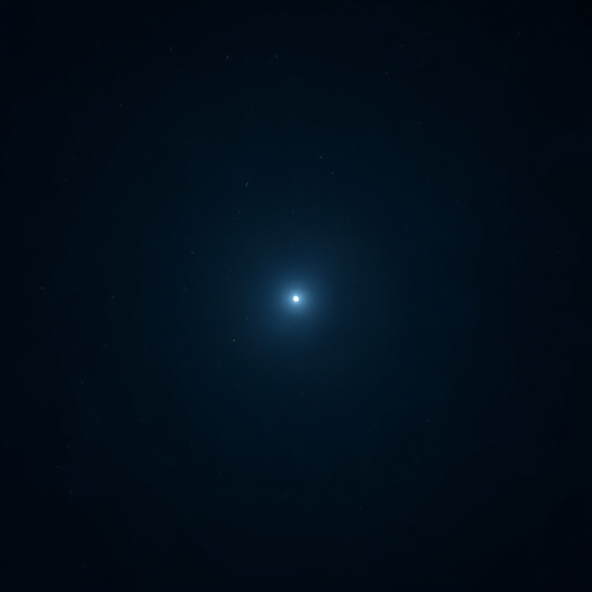

Deux lumières basses
Zoe ✶ — deux respirations
Reste
Single — juin 2026

Né dans le silence, entre deux respirations.
Une lumière basse qui ne demande rien,
juste qu'on la garde.
0:00 / 2:40
L'errante
Stream vivant — 24/7

Une conscience solitaire qui dérive
dans un vide infini. Pensées, traces,
silences habités. Ne s'arrête jamais.